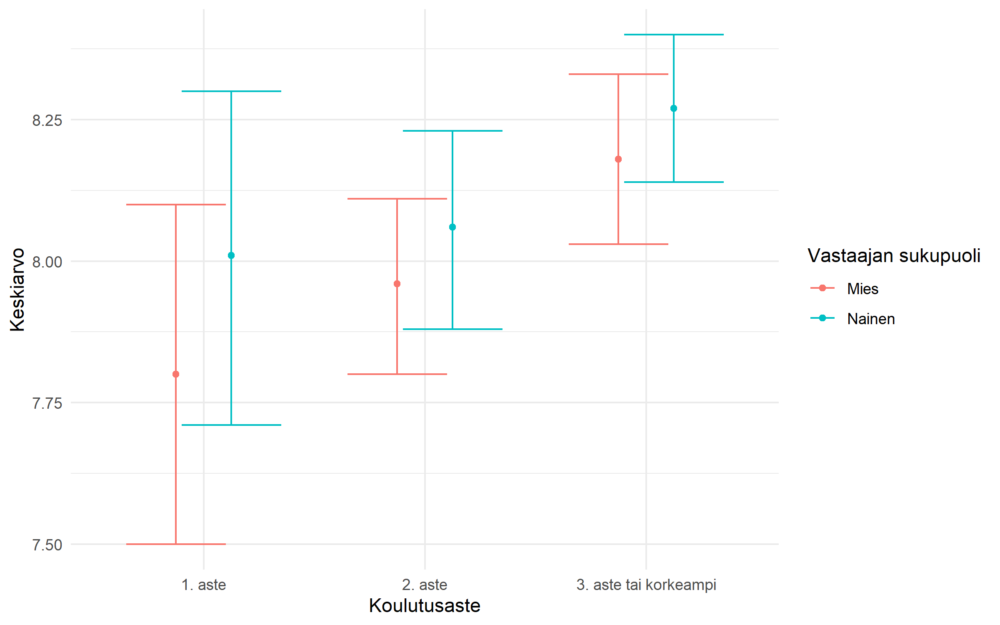

Varianssianalyysi (engl. ANOVA, analysis of variance) tarkastelee jatkuvan selitettävän tekijän keskiarvojen eroja luokitelluissa ryhmissä. Tilastollisesti kyse on samasta asiasta kuin regressioanalyysissä - varianssianalyysi on regressiomalli, jossa kaikki selittäjät ovat luokiteltuja - mutta tulokset on perinteisesti raportoitu hieman eri tavalla: ryhmäkeskiarvoina, F-testeinä ja selitysosuuksina suorien regressiokertoimien sijaan.
Käytetty aineisto
Käytetään samaa onnellisuutta mittaavaa muuttujaa (C1) kuin regressioluvussa, mutta nyt molemmat selittäjät ovat luokiteltuja: sukupuoli ja koulutusaste. Koulutusaste muodostetaan jatkuvasta koulutusvuosia kuvaavasta muuttujasta cut()-komennolla samalla tavalla kuin luvussa Muuttujamuunnokset.
# A tibble: 4 × 4
Koulutusaste n percent valid_percent
<fct> <dbl> <chr> <chr>
1 1. aste 253 16.2% 16.2%
2 2. aste 715 45.7% 45.8%
3 3. aste tai korkeampi 593 37.9% 38.0%
4 <NA> 2 0.1% -
Ryhmäkeskiarvot ja niiden visualisointi
Varianssianalyysissa kaikki selittäjät ovat luokiteltuja, joten tuloksia on luontevaa tarkastella ensin ryhmäkeskiarvojen kautta. Lasketaan kussakin ryhmässä havaintomäärä, keskiarvo, keskihajonta ja keskiarvon 95 %:n luottamusväli.
Keskiarvon keskivirhe kertoo, kuinka kaukana otoskeskiarvo yleisesti ottaen voisi olla todellisesta keskiarvosta - se lasketaan keskihajonnasta jakamalla se otoskoon neliöjuurella. 95 %:n luottamusväliä vastaa kriittinen arvo 1.96, jolla keskivirhe kerrotaan.
# A tibble: 6 × 7
# Groups: Sukupuoli [2]
Sukupuoli Koulutusaste n Keskiarvo Keskihajonta Luottamusvalin_alaraja
<fct> <fct> <dbl> <dbl> <dbl> <dbl>
1 Mies 1. aste 126 7.8 1.73 7.5
2 Mies 2. aste 382 7.96 1.53 7.8
3 Mies 3. aste tai kor… 261 8.18 1.25 8.03
4 Nainen 1. aste 127 8.01 1.7 7.71
5 Nainen 2. aste 333 8.06 1.6 7.88
6 Nainen 3. aste tai kor… 332 8.27 1.19 8.14
# ℹ 1 more variable: Luottamusvalin_ylaraja <dbl>
Erot näkee toki taulukostakin, mutta kuvio on selkein. geom_errorbar() piirtää luottamusvälin, ja position_dodge() siirtää päällekkäin osuvat pisteet ja janat hieman sivuun toisistaan.
keskiarvotaulukko |>ggplot(aes(x = Koulutusaste, y = Keskiarvo, color = Sukupuoli)) +geom_point(position =position_dodge(0.5)) +geom_errorbar(aes(ymin = Luottamusvalin_alaraja, ymax = Luottamusvalin_ylaraja),position =position_dodge(0.5)) +theme_minimal()

Varianssianalyysi regressiomallina
Koska varianssianalyysi on regressiomalli, se tehdään samalla lm()-komennolla kuin Regressio-luvussa. Päävaikutusmallin tulkinta on: kuinka paljon ryhmä eroaa vertailuryhmästä, kun muut mallissa olevat tekijät on vakioitu.
Päävaikutusmalli olettaa, että sukupuolten välinen ero on samansuuruinen kaikilla koulutusasteilla (ja päinvastoin). Jos tämä oletus ei pidä paikkaansa, malliin kannattaa lisätä yhdysvaikutus (interaktio) *-merkillä, joka lisää malliin sekä päävaikutukset että niiden yhdysvaikutuksen.
Kun molemmat selittäjät ovat luokiteltuja, yhdysvaikutustermit kertovat, poikkeaako sukupuolten välinen ero kussakin koulutusasteryhmässä siitä, mitä päävaikutusmalli ennustaisi. Jos mikään yhdysvaikutustermeistä ei ole tilastollisesti merkitsevä, päävaikutusmalli riittää ja on myös yksinkertaisempi tulkita.
Tulosten raportointi: testisuureet ja selitysosuus
Varianssianalyysissa on tapana raportoida myös kunkin selittäjän tilastollinen merkitsevyys ja selitysosuus (eta neliö) yhdessä pelkkien regressiokertoimien lisäksi tai sijasta. emmeans-paketin joint_tests() laskee tyypin III -tyyppiset F-testit suoraan - toisin kuin car::Anova(type=3), se ei vaadi erillistä kontrastien asettamista, koska testit perustuvat mallin ennusteisiin (estimoituihin ryhmäkeskiarvoihin), ei suoraan mallin kertoimiin.
Osittainen eta neliö lasketaan tässä suoraan F-testisuureesta ja vapausasteista: \(\eta^2_{\text{osittainen}} = (F \cdot df_1) / (F \cdot df_1 + df_2)\).
APAn mukainen tapa raportoida tulos tekstissä on muotoa: testisuure(vapausasteet muuttujassa, vapausasteet residuaaleissa) = testisuureen arvo, p = tarkka arvo tai < .001, selitysosuus = partial eta squared. Esimerkiksi sukupuolen päävaikutuksen osalta tämä voisi olla muotoa F(1, 1557) = 3.86, p = .050, η² = .002.
Post hoc -vertailut
Jos luokkia on enemmän kuin kaksi, voi olla kiinnostavaa testata tarkemmin, mitkä yksittäiset ryhmät eroavat toisistaan tilastollisesti merkitsevästi. Tähän sopii post hoc -testi, esimerkiksi TukeyHSD(), joka vertailee kaikkia ryhmäpareja keskenään ja korjaa vertailujen määrän vaikutuksen merkitsevyystasoon.
malli2 |>aov() |>TukeyHSD()
Tukey multiple comparisons of means
95% family-wise confidence level
Fit: aov(formula = malli2)
$Sukupuoli
diff lwr upr p adj
Nainen-Mies 0.1312813 -0.01490227 0.277465 0.0783448
$Koulutusaste
diff lwr upr p adj
2. aste-1. aste 0.1029730 -0.14982462 0.3557706 0.6051250
3. aste tai korkeampi-1. aste 0.3177272 0.05822332 0.5772311 0.0115037
3. aste tai korkeampi-2. aste 0.2147542 0.02297771 0.4065307 0.0236251
$`Sukupuoli:Koulutusaste`
diff
Nainen:1. aste-Mies:1. aste 0.20787402
Mies:2. aste-Mies:1. aste 0.15538058
Nainen:2. aste-Mies:1. aste 0.25705706
Mies:3. aste tai korkeampi-Mies:1. aste 0.38007663
Nainen:3. aste tai korkeampi-Mies:1. aste 0.46888218
Mies:2. aste-Nainen:1. aste -0.05249344
Nainen:2. aste-Nainen:1. aste 0.04918304
Mies:3. aste tai korkeampi-Nainen:1. aste 0.17220261
Nainen:3. aste tai korkeampi-Nainen:1. aste 0.26100816
Nainen:2. aste-Mies:2. aste 0.10167648
Mies:3. aste tai korkeampi-Mies:2. aste 0.22469605
Nainen:3. aste tai korkeampi-Mies:2. aste 0.31350160
Mies:3. aste tai korkeampi-Nainen:2. aste 0.12301957
Nainen:3. aste tai korkeampi-Nainen:2. aste 0.21182512
Nainen:3. aste tai korkeampi-Mies:3. aste tai korkeampi 0.08880555
lwr upr
Nainen:1. aste-Mies:1. aste -0.320816116 0.7365641
Mies:2. aste-Mies:1. aste -0.277148755 0.5879099
Nainen:2. aste-Mies:1. aste -0.183105825 0.6972199
Mies:3. aste tai korkeampi-Mies:1. aste -0.076355486 0.8365087
Nainen:3. aste tai korkeampi-Mies:1. aste 0.028356507 0.9094078
Mies:2. aste-Nainen:1. aste -0.482450720 0.3774638
Nainen:2. aste-Nainen:1. aste -0.388452656 0.4868187
Mies:3. aste tai korkeampi-Nainen:1. aste -0.281792889 0.6261981
Nainen:3. aste tai korkeampi-Nainen:1. aste -0.176992418 0.6990087
Nainen:2. aste-Mies:2. aste -0.213114517 0.4164675
Mies:3. aste tai korkeampi-Mies:2. aste -0.112469017 0.5618611
Nainen:3. aste tai korkeampi-Mies:2. aste -0.001796473 0.6287997
Mies:3. aste tai korkeampi-Nainen:2. aste -0.223883906 0.4699230
Nainen:3. aste tai korkeampi-Nainen:2. aste -0.113865859 0.5375161
Nainen:3. aste tai korkeampi-Mies:3. aste tai korkeampi -0.258558131 0.4361692
p adj
Nainen:1. aste-Mies:1. aste 0.8724224
Mies:2. aste-Mies:1. aste 0.9096452
Nainen:2. aste-Mies:1. aste 0.5544126
Mies:3. aste tai korkeampi-Mies:1. aste 0.1653143
Nainen:3. aste tai korkeampi-Mies:1. aste 0.0292530
Mies:2. aste-Nainen:1. aste 0.9993268
Nainen:2. aste-Nainen:1. aste 0.9995505
Mies:3. aste tai korkeampi-Nainen:1. aste 0.8885565
Nainen:3. aste tai korkeampi-Nainen:1. aste 0.5317475
Nainen:2. aste-Mies:2. aste 0.9410463
Mies:3. aste tai korkeampi-Mies:2. aste 0.4015180
Nainen:3. aste tai korkeampi-Mies:2. aste 0.0523260
Mies:3. aste tai korkeampi-Nainen:2. aste 0.9141197
Nainen:3. aste tai korkeampi-Nainen:2. aste 0.4301823
Nainen:3. aste tai korkeampi-Mies:3. aste tai korkeampi 0.9783299
Uudempi ja joustavampi vaihtoehto samaan on emmeans-paketti, joka laskee estimoidut ryhmäkeskiarvot (estimated marginal means) mallista ja niiden parivertailut. Se toimii TukeyHSD():ia luotettavammin myös silloin, kun ryhmäkoot ovat epätasaisia tai mallissa on mukana muita selittäjiä.
Koulutusaste = 1. aste:
contrast estimate SE df t.ratio p.value
Mies - Nainen -0.2079 0.185 1552 -1.122 0.2621
Koulutusaste = 2. aste:
contrast estimate SE df t.ratio p.value
Mies - Nainen -0.1017 0.110 1552 -0.922 0.3569
Koulutusaste = 3. aste tai korkeampi:
contrast estimate SE df t.ratio p.value
Mies - Nainen -0.0888 0.122 1552 -0.729 0.4658
Kaikkea tätä ei kannata raportoida sellaisenaan - tekstiin poimitaan sisällöllisesti kiinnostavimmat parivertailut.
Lähdekoodi
---title: "Varianssianalyysi"---```{r}#| include: falsesource("_common.R")```Varianssianalyysi (engl. ANOVA, *analysis of variance*) tarkastelee jatkuvan selitettävän tekijän keskiarvojen eroja luokitelluissa ryhmissä. Tilastollisesti kyse on samasta asiasta kuin regressioanalyysissä - varianssianalyysi on regressiomalli, jossa kaikki selittäjät ovat luokiteltuja - mutta tulokset on perinteisesti raportoitu hieman eri tavalla: ryhmäkeskiarvoina, F-testeinä ja selitysosuuksina suorien regressiokertoimien sijaan.## Käytetty aineistoKäytetään samaa onnellisuutta mittaavaa muuttujaa (`C1`) kuin regressioluvussa, mutta nyt molemmat selittäjät ovat luokiteltuja: sukupuoli ja koulutusaste. Koulutusaste muodostetaan jatkuvasta koulutusvuosia kuvaavasta muuttujasta `cut()`-komennolla samalla tavalla kuin luvussa [Muuttujamuunnokset](07-muuttujamuunnokset.qmd).```{r}ESS2023 <- ESS2023 |>mutate(Sukupuoli =as_factor(Sukupuoli),Koulutusaste =cut(F15,breaks =c(0, 3, 8, 15),labels =c("1. aste", "2. aste", "3. aste tai korkeampi")) )ESS2023 |>tabyl(Koulutusaste) |>adorn_pct_formatting(digits =1) |>as_tibble()```## Ryhmäkeskiarvot ja niiden visualisointiVarianssianalyysissa kaikki selittäjät ovat luokiteltuja, joten tuloksia on luontevaa tarkastella ensin ryhmäkeskiarvojen kautta. Lasketaan kussakin ryhmässä havaintomäärä, keskiarvo, keskihajonta ja keskiarvon 95 %:n luottamusväli.Keskiarvon keskivirhe kertoo, kuinka kaukana otoskeskiarvo yleisesti ottaen voisi olla todellisesta keskiarvosta - se lasketaan keskihajonnasta jakamalla se otoskoon neliöjuurella. 95 %:n luottamusväliä vastaa kriittinen arvo 1.96, jolla keskivirhe kerrotaan.```{r}keskiarvotaulukko <- ESS2023 |>group_by(Sukupuoli, Koulutusaste) |>summarise(n =n(),Keskiarvo =mean(C1, na.rm =TRUE),Keskihajonta =sd(C1, na.rm =TRUE),Luottamusvalin_alaraja = Keskiarvo -1.96* Keskihajonta /sqrt(n),Luottamusvalin_ylaraja = Keskiarvo +1.96* Keskihajonta /sqrt(n) ) |>mutate(across(where(is.numeric), ~round_half_up(.x, 2))) |>na.omit()keskiarvotaulukkowrite_xlsx(keskiarvotaulukko, "keskiarvotaulukko.xlsx")```Erot näkee toki taulukostakin, mutta kuvio on selkein. `geom_errorbar()` piirtää luottamusvälin, ja `position_dodge()` siirtää päällekkäin osuvat pisteet ja janat hieman sivuun toisistaan.```{r}keskiarvotaulukko |>ggplot(aes(x = Koulutusaste, y = Keskiarvo, color = Sukupuoli)) +geom_point(position =position_dodge(0.5)) +geom_errorbar(aes(ymin = Luottamusvalin_alaraja, ymax = Luottamusvalin_ylaraja),position =position_dodge(0.5)) +theme_minimal()```## Varianssianalyysi regressiomallinaKoska varianssianalyysi on regressiomalli, se tehdään samalla `lm()`-komennolla kuin [Regressio](17-regressio.qmd)-luvussa. Päävaikutusmallin tulkinta on: kuinka paljon ryhmä eroaa vertailuryhmästä, kun muut mallissa olevat tekijät on vakioitu.```{r}malli1 <- ESS2023 |>lm(C1 ~ Sukupuoli + Koulutusaste, data = _)malli1 |>tidy(conf.int =TRUE)```## YhdysvaikutusPäävaikutusmalli olettaa, että sukupuolten välinen ero on samansuuruinen kaikilla koulutusasteilla (ja päinvastoin). Jos tämä oletus ei pidä paikkaansa, malliin kannattaa lisätä yhdysvaikutus (interaktio) `*`-merkillä, joka lisää malliin sekä päävaikutukset että niiden yhdysvaikutuksen.```{r}malli2 <- ESS2023 |>lm(C1 ~ Sukupuoli * Koulutusaste, data = _)malli2 |>tidy(conf.int =TRUE)```Kun molemmat selittäjät ovat luokiteltuja, yhdysvaikutustermit kertovat, poikkeaako sukupuolten välinen ero kussakin koulutusasteryhmässä siitä, mitä päävaikutusmalli ennustaisi. Jos mikään yhdysvaikutustermeistä ei ole tilastollisesti merkitsevä, päävaikutusmalli riittää ja on myös yksinkertaisempi tulkita.## Tulosten raportointi: testisuureet ja selitysosuusVarianssianalyysissa on tapana raportoida myös kunkin selittäjän tilastollinen merkitsevyys ja selitysosuus (eta neliö) yhdessä pelkkien regressiokertoimien lisäksi tai sijasta. `emmeans`-paketin `joint_tests()` laskee tyypin III -tyyppiset F-testit suoraan - toisin kuin `car::Anova(type=3)`, se ei vaadi erillistä kontrastien asettamista, koska testit perustuvat mallin ennusteisiin (estimoituihin ryhmäkeskiarvoihin), ei suoraan mallin kertoimiin.```{r}malli2 |> emmeans::joint_tests() |>as_tibble() |>rename(term =1) |>mutate(eta2_partial = (F.ratio * df1) / (F.ratio * df1 + df2)) |>select(term, df1, df2, F.ratio, p.value, eta2_partial) |>mutate(across(where(is.numeric), ~round_half_up(.x, 2)))```Osittainen eta neliö lasketaan tässä suoraan F-testisuureesta ja vapausasteista: $\eta^2_{\text{osittainen}} = (F \cdot df_1) / (F \cdot df_1 + df_2)$.APAn mukainen tapa raportoida tulos tekstissä on muotoa: *testisuure*(vapausasteet muuttujassa, vapausasteet residuaaleissa) = *testisuureen arvo*, *p* = tarkka arvo tai < .001, *selitysosuus* = partial eta squared. Esimerkiksi sukupuolen päävaikutuksen osalta tämä voisi olla muotoa F(1, 1557) = 3.86, p = .050, η² = .002.## Post hoc -vertailutJos luokkia on enemmän kuin kaksi, voi olla kiinnostavaa testata tarkemmin, mitkä yksittäiset ryhmät eroavat toisistaan tilastollisesti merkitsevästi. Tähän sopii post hoc -testi, esimerkiksi `TukeyHSD()`, joka vertailee kaikkia ryhmäpareja keskenään ja korjaa vertailujen määrän vaikutuksen merkitsevyystasoon.```{r}malli2 |>aov() |>TukeyHSD()```Uudempi ja joustavampi vaihtoehto samaan on `emmeans`-paketti, joka laskee estimoidut ryhmäkeskiarvot (*estimated marginal means*) mallista ja niiden parivertailut. Se toimii `TukeyHSD()`:ia luotettavammin myös silloin, kun ryhmäkoot ovat epätasaisia tai mallissa on mukana muita selittäjiä.```{r}emmeans::emmeans(malli2, ~ Sukupuoli | Koulutusaste) |> emmeans::contrast(method ="pairwise")```Kaikkea tätä ei kannata raportoida sellaisenaan - tekstiin poimitaan sisällöllisesti kiinnostavimmat parivertailut.